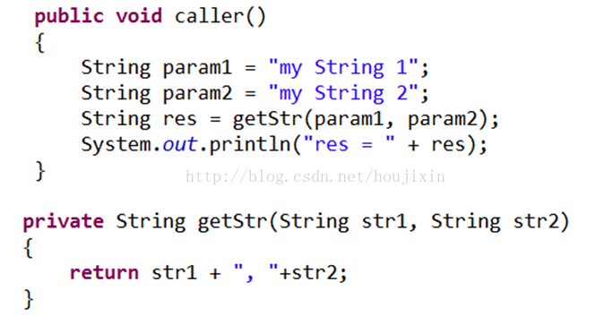
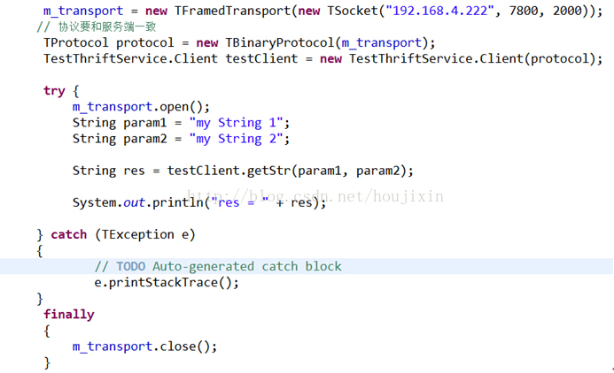
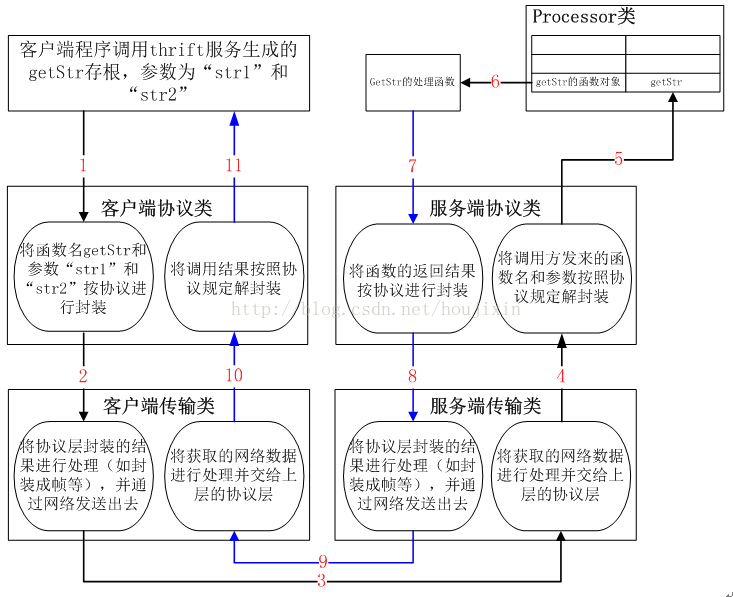
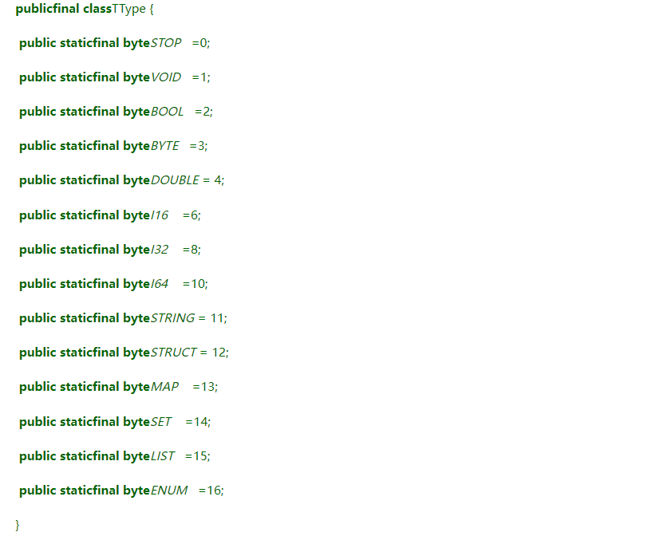
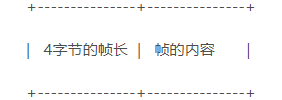

<!DOCTYPE html>


<html lang="zh-Hans">
  

    <head>
      <meta charset="utf-8" />
        
      <meta name="description" content="Technical output and problem solving record" />
      
      <meta
        name="viewport"
        content="width=device-width, initial-scale=1, maximum-scale=1"
      />
      <title>WebService组件——Thrift工作原理 |  Tunan`s Blog</title>
  <meta name="generator" content="hexo-theme-ayer">
      
      <link rel="shortcut icon" href="/favicon.ico" />
       
<link rel="stylesheet" href="/dist/main.css">

      <link
        rel="stylesheet"
        href="https://cdn.jsdelivr.net/gh/Shen-Yu/cdn/css/remixicon.min.css"
      />
      
<link rel="stylesheet" href="/css/custom.css">
 
      <script src="https://cdn.jsdelivr.net/npm/pace-js@1.0.2/pace.min.js"></script>
       
 

      <link
        rel="stylesheet"
        href="https://cdn.jsdelivr.net/npm/@sweetalert2/theme-bulma@5.0.1/bulma.min.css"
      />
      <script src="https://cdn.jsdelivr.net/npm/sweetalert2@11.0.19/dist/sweetalert2.min.js"></script>

      <!-- mermaid -->
      
      <style>
        .swal2-styled.swal2-confirm {
          font-size: 1.6rem;
        }
      </style>
    </head>
  </html>
</html>


<body>
  <div id="app">
    
      
    <main class="content on">
      <section class="outer">
  <article
  id="post-WebService组件03——Thrift"
  class="article article-type-post"
  itemscope
  itemprop="blogPost"
  data-scroll-reveal
>
  <div class="article-inner">
    
    <header class="article-header">
       
<h1 class="article-title sea-center" style="border-left:0" itemprop="name">
  WebService组件——Thrift工作原理
</h1>
 

      
    </header>
     
    <div class="article-meta">
      <a href="/2022/07/22/WebService%E7%BB%84%E4%BB%B603%E2%80%94%E2%80%94Thrift/" class="article-date">
  <time datetime="2022-07-22T10:01:49.000Z" itemprop="datePublished">2022-07-22</time>
</a> 
  <div class="article-category">
    <a class="article-category-link" href="/categories/WebService/">WebService</a>
  </div>
  
<div class="word_count">
    <span class="post-time">
        <span class="post-meta-item-icon">
            <i class="ri-quill-pen-line"></i>
            <span class="post-meta-item-text"> Word count:</span>
            <span class="post-count">4.3k</span>
        </span>
    </span>

    <span class="post-time">
        &nbsp; | &nbsp;
        <span class="post-meta-item-icon">
            <i class="ri-book-open-line"></i>
            <span class="post-meta-item-text"> Reading time≈</span>
            <span class="post-count">15 min</span>
        </span>
    </span>
</div>
 
    </div>
      
    <div class="tocbot"></div>


  
    <div class="article-entry" itemprop="articleBody">
       
  <h1 id="Thrift的工作原理"><a href="#Thrift的工作原理" class="headerlink" title="Thrift的工作原理"></a>Thrift的工作原理</h1><h2 id="1、普通的本地函数调用过程"><a href="#1、普通的本地函数调用过程" class="headerlink" title="1、普通的本地函数调用过程"></a>1、普通的本地函数调用过程</h2><p>例如，有如下关于本地函数的调用的java代码，在函数caller中调用函数getStr获取两个字符串的拼接结果：<span id="more"></span></p>
<p></p>
<p><strong>本地函数调用的调用方和被调用方都在一个程序内部</strong>，只是CPU在执行调用的时候切换去执行被调用的函数，执行完被调用的函数之后，再切换回来执行调用之后的代码，其调用过程如下图所示：</p>
<p></p>
<p>站在调用方的角度，在本地函数的调用过程中，执行被调用函数期间，调用方会被卡在那里一直等待被调用方执行完，然后再继续执行剩下的代码</p>
<h2 id="2、Thrift的RPC调用过程"><a href="#2、Thrift的RPC调用过程" class="headerlink" title="2、Thrift的RPC调用过程"></a>2、Thrift的RPC调用过程</h2><p>远程过程调用（RPC）的调用方和被调用方不在一个进程内，甚至不在同一台机器上，因此远程过程调用中必然涉及网络传输，假设客户端代码如下</p>
<p></p>
<p>上述代码含义在之前的博客中已有详细解释，其调用过程如下图所示</p>
<p></p>
<p>Thrift框架的远程过程调用的工作过程如下：</p>
<ol>
<li>通过IDL定义一个接口的thrift文件，然后通过thrift的多语言编译功能，将接口定义的thrift文件翻译成对应的语言版本的接口文件；</li>
<li>Thrift生成的特定语言的接口文件中包括客户端部分和服务器部分；</li>
<li>客户端通过接口文件中的客户端部分生成一个Client对象，这个客户端对象中包含所有接口函数的存根实现，然后用户代码就可以通过这个Client对象来调用thrift文件中的那些接口函数了，但是，客户端调用接口函数时实际上调用的是接口函数的本地存根实现，如上图箭头1所示；</li>
<li>接口函数的存根实现将调用请求发送给thrift服务器端，然后thrift服务器根据调用的函数名和函数参数，调用实际的实现函数来完成具体的操作，如上图箭头2所示；</li>
<li>Thrift服务器在完成处理之后，将函数的返回值发送给调用的Client对象；如上图箭头3所示；</li>
<li>Thrift的Client对象将函数的返回值再交付给用户的调用函数，如上图箭头4所示；</li>
</ol>
<p>说明：</p>
<ol>
<li>本地函数的调用方和被调方在同一进程的地址空间内部，因此在调用时cpu还是由当前的进行所持有，只是在调用期间，cpu去执行被调用函数，从而导致调用方被卡在那里，直到cpu执行完被调用函数之后，才能切换回来继续执行调用之后的代码；</li>
<li>RPC在调用方和被调用方一般不在一台机子上，它们之间通过网络传输进行通信，一般的RPC都是采用tcp连接，如果同一条tcp连接同一时间段只能被一个调用所独占，这种情况与[1]中的本地过程更为相似，这种情况是同步调用，很显然，这种方式通信的效率比较低，因为服务函数执行期间，tcp连接上没有数据传输还依然被本次调用所霸占；另外，这种方式也有优点：实现简单。</li>
<li>在一些的RPC服务框架中，为了提升网络通信的效率，客户端发起调用之后不被阻塞，这种情况是<strong>异步调用</strong>，它的通信效率比同步调用高，但是实现起来比较复杂</li>
</ol>
<h1 id="Thrift源码分析"><a href="#Thrift源码分析" class="headerlink" title="Thrift源码分析"></a>Thrift源码分析</h1><p>源码分析主要分析thrift生成的java接口文件，并以TestThriftService.java为例，以该文件为线索，逐渐分析文件中遇到的其他类和文件；在thrift生成的服务接口文件中，共包含以下几部分：</p>
<ol>
<li>异步客户端类AsyncClient和异步接口AsyncIface，本节暂不涉及这些异步操作相关内容</li>
<li><strong>同步客户端类Client和同步接口Iface</strong>，Client类继承自TServiceClient，并实现了同步接口Iface；Iface就是根据thrift文件中所定义的接口函数所生成；Client类是在开发Thrift的客户端程序时使用，Client类是Iface的客户端存根实现， Iface在开发Thrift服务器的时候要使用，Thrift的服务器端程序要实现接口Iface。</li>
<li><strong>Processor类</strong>，该类主要是开发Thrift服务器程序的时候使用，该类内部定义了一个map，它保存了所有函数名到函数对象的映射，一旦Thrift接到一个函数调用请求，就从该map中根据函数名字找到该函数的函数对象，然后执行它；</li>
<li><strong>参数类</strong>，为每个接口函数定义一个参数类，例如：为接口getInt产生一个参数类：getInt_args，一般情况下，接口函数参数类的命名方式为：接口函数名_args</li>
<li><strong>参数类</strong>，为每个接口函数定义一个参数类，例如：为接口getInt产生一个参数类：getInt_args，一般情况下，接口函数参数类的命名方式为：接口函数名_args</li>
</ol>
<p>参数类和返回值类中有对数据的读写操作，在参数类中，将按照协议类将调用的函数名和参数进行封装，在返回值类中，将按照协议规定读取数据。</p>
<p>Thrift调用过程中，Thrift客户端和服务器之间主要用到传输层类、协议层类和处理类三个主要的核心类，这三个类的相互协作共同完成rpc的整个调用过程。在调用过程中将按照以下顺序进行协同工作：</p>
<ol>
<li>将客户端程序调用的函数名和参数传递给协议层（TProtocol），协议层将函数名和参数按照协议格式进行封装，然后封装的结果交给下层的传输层。此处需要注意：要与Thrift服务器程序所使用的协议类型一样，否则Thrift服务器程序便无法在其协议层进行数据解析；</li>
<li>传输层（TTransport）将协议层传递过来的数据进行处理，例如传输层的实现类TFramedTransport就是将数据封装成帧的形式，即“数据长度+数据内容”，然后将处理之后的数据通过网络发送给Thrift服务器；此处也需要注意：要与Thrift服务器程序所采用的传输层的实现类一致，否则Thrift的传输层也无法将数据进行逆向的处理；</li>
<li>Thrift服务器通过传输层（TTransport）接收网络上传输过来的调用请求数据，然后将接收到的数据进行逆向的处理，例如传输层的实现类TFramedTransport就是将“数据长度+数据内容”形式的网络数据，转成只有数据内容的形式，然后再交付给Thrift服务器的协议类（TProtocol）；</li>
<li>Thrift服务端的协议类（TProtocol）将传输层处理之后的数据按照协议进行解封装，并将解封装之后的数据交个Processor类进行处理；</li>
<li>Thrift服务端的Processor类根据协议层（TProtocol）解析的结果，按照函数名找到函数名所对应的函数对象；</li>
<li> Thrift服务端使用传过来的参数调用这个找到的函数对象；</li>
<li> Thrift服务端将函数对象执行的结果交给协议层；</li>
<li>Thrift服务器端的协议层将函数的执行结果进行协议封装；</li>
<li>Thrift服务器端的传输层将协议层封装的结果进行处理，例如封装成帧，然后发送给Thrift客户端程序；</li>
<li> Thrift客户端程序的传输层将收到的网络结果进行逆向处理，得到实际的协议数据；</li>
<li>Thrift客户端的协议层将数据按照协议格式进行解封装，然后得到具体的函数执行结果，并将其交付给调用函数；</li>
</ol>
<p>上述过程如下图所示</p>
<p></p>
<p>上图的客户端协议类和服务端协议类都是指具体实现了TProtocol接口的协议类，在实际开发过程中二者必须一样，否则便不能进行通信；同样，客户端传输类和服务端传输类是指TTransport的子类，二者也需保持一致；</p>
<p>在上述开发thrift客户端和服务器端程序时需要用到三个类：传输类（TTransport）、协议接口（TProtocol）和处理类（Processor），其中TTransport是抽象类，在实际开发过程中可根据具体清空选择不同的实现类；TProtocol是个协议接口，每种不同的协议都必须实现此接口才能被thrift所调用。例如TProtocol类的实现类就有TBinaryProtocol等；在Thrift生成代码的内部，还需要将待传输的内容封装成消息类TMessage。处理类（Processor）主要在开发Thrift服务器端程序的时候使用。</p>
<h2 id="1、TMessage"><a href="#1、TMessage" class="headerlink" title="1、TMessage"></a>1、TMessage</h2><p>Thrift在客户端和服务器端传递数据的时候（包括发送调用请求和返回执行结果），都是将数据按照TMessage进行组装，然后发送；TMessage包括三部分：消息的名称、消息的序列号和消息的类型,消息名称为字符串类型，消息的序列号为32位的整形，消息的类型为byte类型，消息的类型共有如下17种：</p>
<p></p>
<h2 id="2、传输类TTransport"><a href="#2、传输类TTransport" class="headerlink" title="2、传输类TTransport"></a>2、传输类TTransport</h2><p>传输类或其各种实现类，都是对I/O层的一个封装，可更直观的理解为它封装了一个socket，不同的实现类有不同的封装方式，例如TFramedTransport类，它里面还封装了一个读写buf，在写入的时候，数据都先写到这个buf里面，等到写完调用该类的flush函数的时候，它会将写buf的内容，封装成帧再发送出去，实现NIO的异步读写行为；</p>
<p>TFramedTransport是对TTransport的继承，由于tcp是基于字节流的方式进行传输，因此这种基于帧的方式传输就要求在无头无尾的字节流中每次写入和读出一个帧，TFramedTransport是按照下面的方式来组织帧的：每个帧都是按照4字节的帧长加上帧的内容来组织，帧内容就是我们要收发的数据，如下：</p>
<p></p>
<h2 id="3、协议接口TProtocol"><a href="#3、协议接口TProtocol" class="headerlink" title="3、协议接口TProtocol"></a>3、协议接口TProtocol</h2><p>Thrift提供了一组操作协议接口，主要用于规定采用哪种协议进行数据的读写，它内部包含一个传输类（TTransport）成员对象，通过TTransport对象从输入输出流中读写数据；它规定了很多读写方式，例如：</p>
<p>readByte()</p>
<p>readDouble()</p>
<p>readString()…</p>
<p> 每种实现类都根据自己所实现的协议来完成TProtocol接口函数的功能，例如实现了TProtocol接口的TBinaryProtocol类，对于readDouble()函数就是按照二进制的方式读取出一个Double类型的数据。</p>
<p>类TBinaryProtocol是TProtocol的一个实现类，TBinaryProtocol协议规定采用这种协议格式的进行消息传输时，需要为消息内容封装一个首部，TBinaryProtocol协议的首部有两种操作方式：一种是严格读写模式，一种值普通的读写模式；这两种模式下消息首部的组织方式不一样，在创建时也可以自己指定使用那种模式，但是要注意，如果要指定模式，Thrift的服务器端和客户端都需要指定。</p>
<ul>
<li> 严格读写模型下的消息首部的前16字节固定为版本号：0x8001，如图所示:</li>
</ul>
<p></p>
<p>在严格读写模式下，首部中前32字节包括固定的16字节协议版本号0x8001，8字节的0x00，8字节的消息类型；然后是若干字节字符串格式的消息名称，消息名称的组织方式也是“长度+内容”的方式；再下来是32位的消息序列号；在序列号之后的才是消息内容。</p>
<ul>
<li>普通读写模式下，没有版本信息，首部的前32字节就是消息的名称，然后是消息的名字，接下来是32为的消息序列号，最后是消息的内容</li>
</ul>
<p></p>
<p>通信过程中消息的首部在TBinaryProtocol类中进行通过readMessageBegin读取，通过writeMessageBegin写入；但是消息的内容读取在返回值封装类（例如：getStr_result）中进行；</p>
<h2 id="4、Thrift客户端存根"><a href="#4、Thrift客户端存根" class="headerlink" title="4、Thrift客户端存根"></a>4、Thrift客户端存根</h2><p>下面通过跟踪thrift客户端代码的test()函数，在该函数中调用了Thrift存根函数getStr，通过追踪该函数的执行过程来查看整个Thrift的调用流程：</p>
<ol>
<li><p>客户端代码先打开socket，然后调用存根对象的</p>
<pre><code class="java">m_transport.open();
String res = testClient.getStr(&quot;test1&quot;,&quot;test2&quot;);
</code></pre>
</li>
<li><p>在getStr的存根实现中，首先发送调用请求，然后等待Thrift服务器端返回的结果</p>
<pre><code class="java">send_getStr(srcStr1, srcStr2);
return recv_getStr();
</code></pre>
</li>
<li><p>发送调用请求函数send_getStr中主要将参数存储到参数对象中，然后把参数和函数名发送出去</p>
<pre><code class="java">getStr_args args = new getStr_args();//创建一个该函数的参数对象
args.setSrcStr1(srcStr1);//将参数值设置带参数对象中
args.setSrcStr2(srcStr2);
sendBase(&quot;getStr&quot;, args);//将函数名和参数对象发送出去
</code></pre>
</li>
<li><p>sendBase函数，存根类Client继承自基类TServiceClient，sendBase函数即是在TServiceClient类中实现的，它的主要功能是调用协议类将调用的函数名和参数发送给Thrift服务器：</p>
<pre><code class="java">oprot_.writeMessageBegin(new TMessage(methodName,TMessageType.CALL, ++seqid_));//将函数名，消息类型，序号等信息存放到oprot_的TFramedTransport成员的buf中
args.write(oprot_);//将参数存放到oprot_的TFramedTransport成员的buf中
oprot_.writeMessageEnd();
oprot_.getTransport().flush();//将oprot_的TFramedTransport成员的buf中的存放的消息发送出去；
</code></pre>
<p>这里的oprot_就是在TProtocol的子类，本例中使用的是TBinaryProtocol，在调用TBinaryProtocol的函数时需要传入一个TMessage对象（在本节第2小节中有对TMessage的描述），这个TMessage对象的名字就是调用函数名，消息的类型为TMessageType.CALL，调用序号使用在客户端存根类中（实际上是在基类TServiceClient）中保存的一个序列号，每次调用时均使用此序列号，使用完再将序号加1。</p>
</li>
<li><p>recv_getStr，在调用send_getStr将调用请求发送出去之后，存根函数getStr中将调用recv_getStr等待Thrift服务器端返回调用结果，recv_getStr的代码为：</p>
<pre><code class="java">getStr_resultresult = new getStr_result();//为接收返回结果创建一个返回值对象
receiveBase(result, &quot;getStr&quot;);//等待Thrift服务器将结果返回
</code></pre>
</li>
<li><p>receiveBase，在该函数中，首先通过协议层读取消息的首部，然后由针对getStr生成的返回值类getStr_result读取返回结果的内容；最后由协议层对象结束本次消息读取操作；如下所示：</p>
<pre><code class="java">iprot_.readMessageBegin();//通过协议层对象读取消息的首部
……
result.read(iprot_);//通过返回值类对象读取具体的返回值；
……
iprot_.readMessageEnd();//调用协议层对象结束本次消息读取
</code></pre>
<p>在本节第4小节中有对readMessageBegin函数的描述；</p>
</li>
</ol>
<h2 id="5、处理类Processor"><a href="#5、处理类Processor" class="headerlink" title="5、处理类Processor"></a>5、<strong>处理类Processor</strong></h2><p>该类主要由Thrift服务器端程序使用，它是由thrift编译器根据IDL编写的thrift文件生成的具体语言的接口文件中所包含的类，例如2.5节中提到的TestThriftService.java文件，处理类（Processor）主要由thrift服务器端使用，它继承自基类TBaseProcessor。</p>
<p><code>TProcessor tProcessor = NewTestThriftService.Processor&lt;TestThriftService.Iface&gt;(m_myService);</code></p>
<p>这里的TestThriftService.Processor就是这里提到的Processor类，包括尖括号里面的接口TestThriftService.Iface也是由thrift编译器自动生成。Processor类主要完成函数名到对应的函数对象的映射，它内部维护一个map，map的key就是接口函数的名字，而value就是接口函数所对应的函数对象，这样服务器端从网络中读取到客户端发来的函数名字的时候，就通过这个map找到该函数名对应的函数对象，然后再用客户端发来的参数调用该函数对象；在Thrift框架中，每个接口函数都有一个函数对象与之对应，这里的函数对象继承自虚基类ProcessFunction。</p>
<pre><code>  Thrift服务器端程序在使用Thrrift服务框架时，需要提供以下几个条件：

  （1）定义一个接口函数实现类的对象，在开发Thrift服务程序时，最主要的功能就是开发接口的实现函数，这个接口函数的实现类implements接口Iface，并实现了接口中所有函数；

  （2）创建一个监听socket，Thrift服务框架将从此端口监听新的调用请求到来；

  （3）创建一个实现了TProtocol接口的协议类对象，在与Thrift客户端程序通信时将使用此协议进行网络数据的封装和解封装；

  （4）创建一个传输类的子类，用于和Thrift服务器之间进行数据传输；
</code></pre>
 
      <!-- reward -->
      
    </div>
    

    <!-- copyright -->
    
    <div class="declare">
      <ul class="post-copyright">
        <li>
          <i class="ri-copyright-line"></i>
          <strong>Copyright： </strong>
          
          Copyright is owned by the author. For commercial reprints, please contact the author for authorization. For non-commercial reprints, please indicate the source.
          
        </li>
      </ul>
    </div>
    
    <footer class="article-footer">
       
<div class="share-btn">
      <span class="share-sns share-outer">
        <i class="ri-share-forward-line"></i>
        分享
      </span>
      <div class="share-wrap">
        <i class="arrow"></i>
        <div class="share-icons">
          
          <a class="weibo share-sns" href="javascript:;" data-type="weibo">
            <i class="ri-weibo-fill"></i>
          </a>
          <a class="weixin share-sns wxFab" href="javascript:;" data-type="weixin">
            <i class="ri-wechat-fill"></i>
          </a>
          <a class="qq share-sns" href="javascript:;" data-type="qq">
            <i class="ri-qq-fill"></i>
          </a>
          <a class="douban share-sns" href="javascript:;" data-type="douban">
            <i class="ri-douban-line"></i>
          </a>
          <!-- <a class="qzone share-sns" href="javascript:;" data-type="qzone">
            <i class="icon icon-qzone"></i>
          </a> -->
          
          <a class="facebook share-sns" href="javascript:;" data-type="facebook">
            <i class="ri-facebook-circle-fill"></i>
          </a>
          <a class="twitter share-sns" href="javascript:;" data-type="twitter">
            <i class="ri-twitter-fill"></i>
          </a>
          <a class="google share-sns" href="javascript:;" data-type="google">
            <i class="ri-google-fill"></i>
          </a>
        </div>
      </div>
</div>

<div class="wx-share-modal">
    <a class="modal-close" href="javascript:;"><i class="ri-close-circle-line"></i></a>
    <p>扫一扫，分享到微信</p>
    <div class="wx-qrcode">
      
    </div>
</div>

<div id="share-mask"></div>  
  <ul class="article-tag-list" itemprop="keywords"><li class="article-tag-list-item"><a class="article-tag-list-link" href="/tags/WebService/" rel="tag">WebService</a></li></ul>

    </footer>
  </div>

   
  <nav class="article-nav">
    
      <a href="/2022/07/25/Java%E7%9A%84%E5%80%BC%E4%BC%A0%E9%80%92/" class="article-nav-link">
        <strong class="article-nav-caption">上一篇</strong>
        <div class="article-nav-title">
          
            Java的值传递
          
        </div>
      </a>
    
    
      <a href="/2022/07/22/WebService%E7%BB%84%E4%BB%B602%E2%80%94%E2%80%94Thrift/" class="article-nav-link">
        <strong class="article-nav-caption">下一篇</strong>
        <div class="article-nav-title">WebService组件——Thrift使用问题记录</div>
      </a>
    
  </nav>

   
<!-- valine评论 -->
<div id="vcomments-box">
  <div id="vcomments"></div>
</div>
<script src="//cdn1.lncld.net/static/js/3.0.4/av-min.js"></script>
<script src="https://cdn.jsdelivr.net/npm/valine@1.4.14/dist/Valine.min.js"></script>
<script>
  new Valine({
    el: "#vcomments",
    app_id: "",
    app_key: "",
    path: window.location.pathname,
    avatar: "monsterid",
    placeholder: "给我的文章加点评论吧~",
    recordIP: true,
  });
  const infoEle = document.querySelector("#vcomments .info");
  if (infoEle && infoEle.childNodes && infoEle.childNodes.length > 0) {
    infoEle.childNodes.forEach(function (item) {
      item.parentNode.removeChild(item);
    });
  }
</script>
<style>
  #vcomments-box {
    padding: 5px 30px;
  }

  @media screen and (max-width: 800px) {
    #vcomments-box {
      padding: 5px 0px;
    }
  }

  #vcomments-box #vcomments {
    background-color: #fff;
  }

  .v .vlist .vcard .vh {
    padding-right: 20px;
  }

  .v .vlist .vcard {
    padding-left: 10px;
  }
</style>

 
   
     
</article>

</section>
      <footer class="footer">
  <div class="outer">
    <ul>
      <li>
        Copyrights &copy;
        2018-2022
        <i class="ri-heart-fill heart_icon"></i> Tunan
      </li>
    </ul>
    <ul>
      <li>
        
      </li>
    </ul>
    <ul>
      <li>
        
        
        <span>
  <span><i class="ri-user-3-fill"></i>Visitors:<span id="busuanzi_value_site_uv"></span></span>
  <span class="division">|</span>
  <span><i class="ri-eye-fill"></i>Views:<span id="busuanzi_value_page_pv"></span></span>
</span>
        
      </li>
    </ul>
    <ul>
      
    </ul>
    <ul>
      
    </ul>
    <ul>
      <li>
        <!-- cnzz统计 -->
        
        <script type="text/javascript" src='https://s9.cnzz.com/z_stat.php?id=1278069914&amp;web_id=1278069914'></script>
        
      </li>
    </ul>
  </div>
</footer>    
    </main>
    <div class="float_btns">
      <div class="totop" id="totop">
  <i class="ri-arrow-up-line"></i>
</div>

<div class="todark" id="todark">
  <i class="ri-moon-line"></i>
</div>

    </div>
    <aside class="sidebar on">
      <button class="navbar-toggle"></button>
<nav class="navbar">
  
  <div class="logo">
    <a href="/"></a>
  </div>
  
  <ul class="nav nav-main">
    
    <li class="nav-item">
      <a class="nav-item-link" href="/">主页</a>
    </li>
    
    <li class="nav-item">
      <a class="nav-item-link" href="/archives">归档</a>
    </li>
    
    <li class="nav-item">
      <a class="nav-item-link" href="/categories">分类</a>
    </li>
    
    <li class="nav-item">
      <a class="nav-item-link" href="/tags">标签</a>
    </li>
    
    <li class="nav-item">
      <a class="nav-item-link" href="/tags/share">分享</a>
    </li>
    
    <li class="nav-item">
      <a class="nav-item-link" target="_blank" rel="noopener" href="https://blog.csdn.net/North_City_">CSDN</a>
    </li>
    
  </ul>
</nav>
<nav class="navbar navbar-bottom">
  <ul class="nav">
    <li class="nav-item">
      
      <a class="nav-item-link nav-item-search"  title="Search">
        <i class="ri-search-line"></i>
      </a>
      
      
      <a class="nav-item-link" target="_blank" href="/atom.xml" title="RSS Feed">
        <i class="ri-rss-line"></i>
      </a>
      
    </li>
  </ul>
</nav>
<div class="search-form-wrap">
  <div class="local-search local-search-plugin">
  <input type="search" id="local-search-input" class="local-search-input" placeholder="Search...">
  <div id="local-search-result" class="local-search-result"></div>
</div>
</div>
    </aside>
    <div id="mask"></div>

<!-- #reward -->
<div id="reward">
  <span class="close"><i class="ri-close-line"></i></span>
  <p class="reward-p"><i class="ri-cup-line"></i>请我喝杯咖啡吧~</p>
  <div class="reward-box">
    
    <div class="reward-item">
      
      <span class="reward-type">支付宝</span>
    </div>
    
    
    <div class="reward-item">
      
      <span class="reward-type">微信</span>
    </div>
    
  </div>
</div>
    
<script src="/js/jquery-3.6.0.min.js"></script>
 
<script src="/js/lazyload.min.js"></script>

<!-- Tocbot -->
 
<script src="/js/tocbot.min.js"></script>

<script>
  tocbot.init({
    tocSelector: ".tocbot",
    contentSelector: ".article-entry",
    headingSelector: "h1, h2, h3, h4, h5, h6",
    hasInnerContainers: true,
    scrollSmooth: true,
    scrollContainer: "main",
    positionFixedSelector: ".tocbot",
    positionFixedClass: "is-position-fixed",
    fixedSidebarOffset: "auto",
  });
</script>

<script src="https://cdn.jsdelivr.net/npm/jquery-modal@0.9.2/jquery.modal.min.js"></script>
<link
  rel="stylesheet"
  href="https://cdn.jsdelivr.net/npm/jquery-modal@0.9.2/jquery.modal.min.css"
/>
<script src="https://cdn.jsdelivr.net/npm/justifiedGallery@3.7.0/dist/js/jquery.justifiedGallery.min.js"></script>

<script src="/dist/main.js"></script>

<!-- ImageViewer -->
 <!-- Root element of PhotoSwipe. Must have class pswp. -->
<div class="pswp" tabindex="-1" role="dialog" aria-hidden="true">

    <!-- Background of PhotoSwipe. 
         It's a separate element as animating opacity is faster than rgba(). -->
    <div class="pswp__bg"></div>

    <!-- Slides wrapper with overflow:hidden. -->
    <div class="pswp__scroll-wrap">

        <!-- Container that holds slides. 
            PhotoSwipe keeps only 3 of them in the DOM to save memory.
            Don't modify these 3 pswp__item elements, data is added later on. -->
        <div class="pswp__container">
            <div class="pswp__item"></div>
            <div class="pswp__item"></div>
            <div class="pswp__item"></div>
        </div>

        <!-- Default (PhotoSwipeUI_Default) interface on top of sliding area. Can be changed. -->
        <div class="pswp__ui pswp__ui--hidden">

            <div class="pswp__top-bar">

                <!--  Controls are self-explanatory. Order can be changed. -->

                <div class="pswp__counter"></div>

                <button class="pswp__button pswp__button--close" title="Close (Esc)"></button>

                <button class="pswp__button pswp__button--share" style="display:none" title="Share"></button>

                <button class="pswp__button pswp__button--fs" title="Toggle fullscreen"></button>

                <button class="pswp__button pswp__button--zoom" title="Zoom in/out"></button>

                <!-- Preloader demo http://codepen.io/dimsemenov/pen/yyBWoR -->
                <!-- element will get class pswp__preloader--active when preloader is running -->
                <div class="pswp__preloader">
                    <div class="pswp__preloader__icn">
                        <div class="pswp__preloader__cut">
                            <div class="pswp__preloader__donut"></div>
                        </div>
                    </div>
                </div>
            </div>

            <div class="pswp__share-modal pswp__share-modal--hidden pswp__single-tap">
                <div class="pswp__share-tooltip"></div>
            </div>

            <button class="pswp__button pswp__button--arrow--left" title="Previous (arrow left)">
            </button>

            <button class="pswp__button pswp__button--arrow--right" title="Next (arrow right)">
            </button>

            <div class="pswp__caption">
                <div class="pswp__caption__center"></div>
            </div>

        </div>

    </div>

</div>

<link rel="stylesheet" href="https://cdn.jsdelivr.net/npm/photoswipe@4.1.3/dist/photoswipe.min.css">
<link rel="stylesheet" href="https://cdn.jsdelivr.net/npm/photoswipe@4.1.3/dist/default-skin/default-skin.min.css">
<script src="https://cdn.jsdelivr.net/npm/photoswipe@4.1.3/dist/photoswipe.min.js"></script>
<script src="https://cdn.jsdelivr.net/npm/photoswipe@4.1.3/dist/photoswipe-ui-default.min.js"></script>

<script>
    function viewer_init() {
        let pswpElement = document.querySelectorAll('.pswp')[0];
        let $imgArr = document.querySelectorAll(('.article-entry img:not(.reward-img)'))

        $imgArr.forEach(($em, i) => {
            $em.onclick = () => {
                // slider展开状态
                // todo: 这样不好，后面改成状态
                if (document.querySelector('.left-col.show')) return
                let items = []
                $imgArr.forEach(($em2, i2) => {
                    let img = $em2.getAttribute('data-idx', i2)
                    let src = $em2.getAttribute('data-target') || $em2.getAttribute('src')
                    let title = $em2.getAttribute('alt')
                    // 获得原图尺寸
                    const image = new Image()
                    image.src = src
                    items.push({
                        src: src,
                        w: image.width || $em2.width,
                        h: image.height || $em2.height,
                        title: title
                    })
                })
                var gallery = new PhotoSwipe(pswpElement, PhotoSwipeUI_Default, items, {
                    index: parseInt(i)
                });
                gallery.init()
            }
        })
    }
    viewer_init()
</script> 
<!-- MathJax -->

<!-- Katex -->

<!-- busuanzi  -->
 
<script src="/js/busuanzi-2.3.pure.min.js"></script>
 
<!-- ClickLove -->

<!-- ClickBoom1 -->

<!-- ClickBoom2 -->

<!-- CodeCopy -->
 
<link rel="stylesheet" href="/css/clipboard.css">
 <script src="https://cdn.jsdelivr.net/npm/clipboard@2/dist/clipboard.min.js"></script>
<script>
  function wait(callback, seconds) {
    var timelag = null;
    timelag = window.setTimeout(callback, seconds);
  }
  !function (e, t, a) {
    var initCopyCode = function(){
      var copyHtml = '';
      copyHtml += '<button class="btn-copy" data-clipboard-snippet="">';
      copyHtml += '<i class="ri-file-copy-2-line"></i><span>COPY</span>';
      copyHtml += '</button>';
      $(".highlight .code pre").before(copyHtml);
      $(".article pre code").before(copyHtml);
      var clipboard = new ClipboardJS('.btn-copy', {
        target: function(trigger) {
          return trigger.nextElementSibling;
        }
      });
      clipboard.on('success', function(e) {
        let $btn = $(e.trigger);
        $btn.addClass('copied');
        let $icon = $($btn.find('i'));
        $icon.removeClass('ri-file-copy-2-line');
        $icon.addClass('ri-checkbox-circle-line');
        let $span = $($btn.find('span'));
        $span[0].innerText = 'COPIED';
        
        wait(function () { // 等待两秒钟后恢复
          $icon.removeClass('ri-checkbox-circle-line');
          $icon.addClass('ri-file-copy-2-line');
          $span[0].innerText = 'COPY';
        }, 2000);
      });
      clipboard.on('error', function(e) {
        e.clearSelection();
        let $btn = $(e.trigger);
        $btn.addClass('copy-failed');
        let $icon = $($btn.find('i'));
        $icon.removeClass('ri-file-copy-2-line');
        $icon.addClass('ri-time-line');
        let $span = $($btn.find('span'));
        $span[0].innerText = 'COPY FAILED';
        
        wait(function () { // 等待两秒钟后恢复
          $icon.removeClass('ri-time-line');
          $icon.addClass('ri-file-copy-2-line');
          $span[0].innerText = 'COPY';
        }, 2000);
      });
    }
    initCopyCode();
  }(window, document);
</script>
 
<!-- CanvasBackground -->

<script>
  if (window.mermaid) {
    mermaid.initialize({ theme: "forest" });
  }
</script>


    
    

  </div>
</body>

</html>